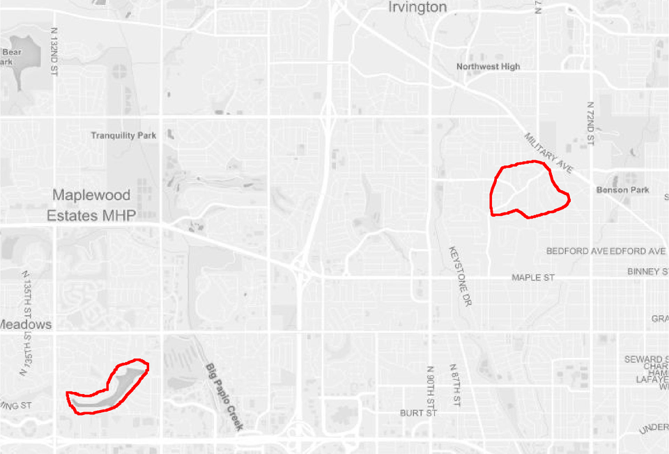
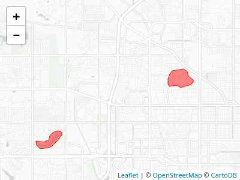

What does this package do for me?
mapscanner is an R package that enables lines drawn by hand on maps to be converted to spatial objects. The package has two primary functions: one for producing maps, and one for rectifying hand-drawn lines to the coordinate system of the original map. The package is intended for use in social surveys and similar endeavours in which hand-drawn markings on maps need to be converted to spatial objects. Maps can be either paper- or screen-based. Markings on paper maps need to be scanned, photographed, or otherwise digitised, while maps with screen-based markings need to be saved as .png-format images.
Installation
The current stable version can be installed from CRAN with:
install.packages ("mapscanner")Alternatively, the development version can be installed via rOpenSci’s r-universe by running the following prior to calling install.packages():
options(repos = c(
ropensci = 'https://ropensci.r-universe.dev',
CRAN = 'https://cloud.r-project.org'))The package can then be loaded for usage in a R session with
Usage
The package is designed to enable the following workflow:
Generate a map with the
ms_generate_map()function, which automatically produces both.pdfand.pngversions;Either print the
.pdfversion to use as desired in any kind of survey environment, or use either the.pdfor.pngversions in digital form for screen-based surveys.Draw on the map;
For paper maps, digitise the drawn-on (from here on, “modified”) map, converting it to either
.pdfor.pngformat; andRectify the modified version against the original via the
ms_rectify_map()function, which distinguishes individual annotations, and converts each one to a spatial object able to be analysed in any desired manner.
Practical tips
The mapscanner package is intended to aid a practical workflow, and so a few practical tips may be recommended here to ensure best results:
- The original digital files generated with
ms_generate_map()are necessary to rectify subsequently drawn-on and scanned maps, and so must be retained at all times. - Marks drawn on maps should be coloured – any black or grey markings will be ignored. This has the advantage that individual annotations not intended to be converted to spatial objects (such as unique identification or participant codes) may be made on maps in black or grey.
- For drawings of areas, best results will be achieved through ensuring that all lines form closed polygons. While the default
type = "hulls"argument should work even when lines are not closed, thetype = "polygons"argument will generally produce more accurate results, yet should only be used when all lines form closed polygons (see below for details on how these two differ). - Digitised versions of paper maps should contain white borders, so do not, for example, photograph modified maps lying on dark surfaces. If maps are to be photographed, then best results can be achieved by simply placing them on a larger, enclosing sheet of white paper.
The following two sections describe the two primary functions of the mapscanner package, corresponding to the two primary steps of producing maps to be used in surveys (or other activities), and rectifying modified maps against these originals in order to extract spatial objects. The second of these sections also describes the kinds of markings able to be recognised, and the kinds of spatial objects to which these may be converted.
Mapbox API tokens
Map generation with mapscanner requires a personal token or key from mapbox, which can be obtained by following the links from https://docs.mapbox.com/api. If you already have a token, the easiest way to use it with mapscanner is to create (or edit) a file ~/.Renviron, and insert a line,
MAPBOX_TOKEN=<my_mapbox_token>This will then be available every time you start R, without any need to explicitly set the token each time you want to use the package. The token may be given any unique name that includes “mapbox” (case insensitive). Alternatively, if you wish to keep your token truly private, and only use it for your current R session, you may load mapscanner, and then run set_mapbox_token(<my_mapbox_token>).
Map generation
Having obtained and set a mapbox token as described above, mapscanner may then be used to generate maps. The package comes with a sample map of Omaha, Nebraska, USA, and one with some red lines drawn on it: 
That’s just a standard png image with no notion of geographical coordinates. The original map was generated with
bbox <- rbind (c (-96.12923, -96.01011),
c (41.26145, 41.32220)) # portion of omaha
ms_generate_map (bbox, max_tiles = 16L, mapname = "omaha")#> Successfully generated 'omaha.pdf' and 'omaha.png'As indicated, the function generates a map in both .pdf and .png formats. These files must be retained as the “master” maps against which subsequently modified – drawn-over and scanned-in – versions will be rectified.
Map rectification
The magic within the mapscanner package happens via the RNiftyReg package, itself primarily intended to align brain scans and other medical images, but which is precisely the tool needed here. The package comes with two sample .png images which can be used to demonstrate map rectification. In the following code, f_modified is the image shown above, modified from the original by drawing a red line around a particular region of Omaha.
f_orig <- system.file ("extdata", "omaha.png", package = "mapscanner")
f_mod <- system.file ("extdata", "omaha-polygons.png", package = "mapscanner")
res <- ms_rectify_map (f_orig, f_mod, type = "polygons")
#> ══ mapscanner ════════════════════════════════════════════════════════════════════════════════════════════════════════════════════════════════════════════════════════════════════════════════════════════════════════════════════════════════
#> ✔ Image [/usr/lib/R/library/mapscanner/extdata/omaha.png] reduced in size by factor of 2
#> ❯ Rectifying the two maps ✔ Rectified the two maps
#> ❯ Estimating optimal signal-to-noise threshold✔ Estimated optimal signal-to-noise threshold
#> ✔ Identified 2 objects
#> ❯ Converting to spatial format ✔ Converted to spatial format
res
#> Simple feature collection with 2 features and 0 fields
#> Geometry type: POLYGON
#> Dimension: XY
#> Bounding box: xmin: -96.11814 ymin: 41.26638 xmax: -96.02722 ymax: 41.30109
#> Geodetic CRS: WGS 84
#> geometry
#> 1 POLYGON ((-96.11589 41.2663...
#> 2 POLYGON ((-96.03544 41.2927...The rectification can take quite some time, during which RNiftyReg package is constructing the best transformation of the modified image back on to the original. The result of ms_rectify_map() is a spatial object in sf-format in which each drawn component is represented as a separate polygon. Finally, we can plot the result as an interactive map using packages like mapview with the following commands:
or mapdeck, which similarly requires a mapbox token:
library (mapdeck)
set_token (Sys.getenv ("<my_mapbox_token>"))
mapdeck () %>%
add_polygon (res, fill_colour = "#ffff00cc",
stroke_colour = "#ff0000", stroke_width = 20)
And our hand-drawn lines shown above have been converted to standard spatial objects able to be analysed in any desired way. See the package vignette for more detail of what the mapscanner package can do.
Code of Conduct
Please note that this package is released with a Contributor Code of Conduct. By contributing to this project, you agree to abide by its terms.
Contributors
All contributions to this project are gratefully acknowledged using the allcontributors package following the all-contributors specification. Contributions of any kind are welcome!